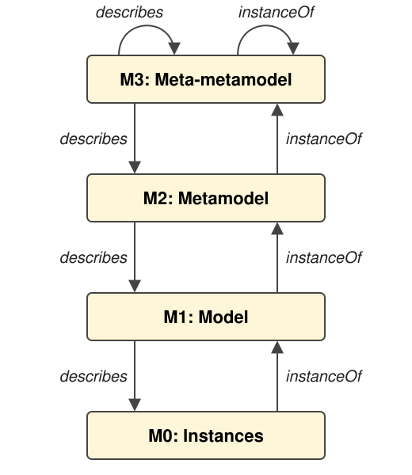
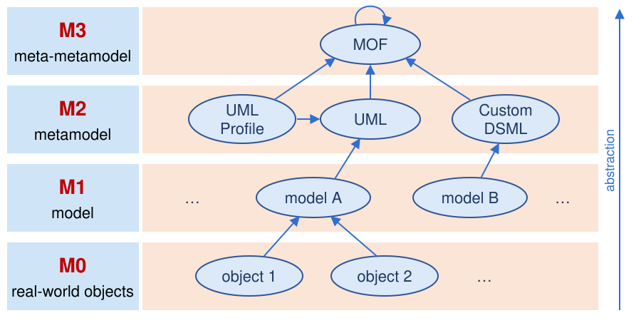
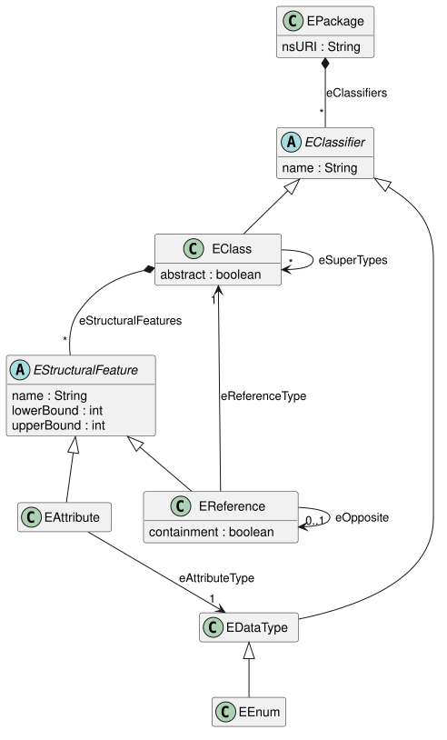
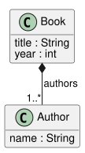
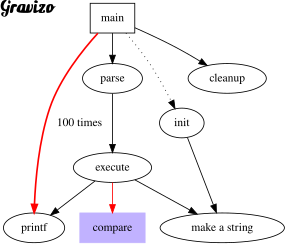
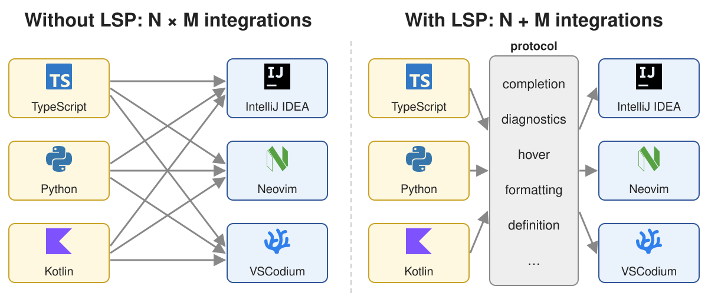
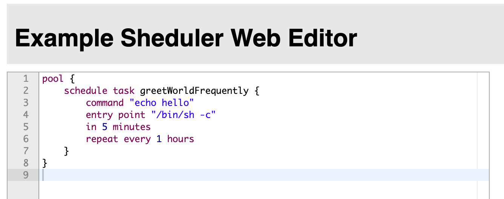

Model Driven Development
Software Process Engineering
Giovanni Ciatto — giovanni.ciatto@unibo.it
Compiled on: 2026-10-09 — printable version
Lecture goals
- Understand metamodelling
- Understand domain specific languages
- Discuss the role of DSLs and code generators in the LLM era
- Practice with model driven development in Xtext
Outline
- Meta-modelling: models, meta-models, meta-meta-models, Ecore, abstract vs. concrete syntax
- Model-driven development: modelling first, automation of implementation
- Domain-specific languages: what they are, examples, DSL vs. GPL
- DSL engineering: semantics, translation vs. interpretation, internal vs. external DSLs
- DSLs in the LLM era: LLMs vs. code generators, DSLs as targets for LLMs
- MDD in practice: tools, LSP, Xtext
- Running example: Sheduler: grammar, validation, scoping, execution engine, generator, interpreter
- each exercise has its solution in a vertical sub-section (press down to see it, right to skip it)
Main references: Völter et al., DSL Engineering, 2013, Fowler, Domain-Specific Languages, 2010
Meta-modelling nomenclature
-
(Abstract) Language $\approx$ (abstract) syntax + semantics
-
Model $\approx$ an abstract description of the possible entities involved in a domain, and their relations
- the model abstracts a number of similar systems rooted in the domain
- each system is an instance of the model it has been designed from
- a model is a template for several systems
-
In which language is the model expressed?
- Meta-model $\approx$ the definition of the concepts (and rules) available for writing models in a given language
- for instance UML is a modelling language commonly used to describe object-oriented designs
- its meta-model defines concepts such as class, attribute, operation, association
- UML $\equiv$ Unified Modeling Language
-
In which language is the meta-model expressed?
- Meta-meta-model $\approx$ the language by which we describe meta-models
- for instance, according to OMG, the meta-model of UML is defined in MOF
- MOF $\equiv$ Meta-Object Facility
- OMG $\equiv$ Object Management Group
Meta-model hierarchy

OMG’s four-layer architecture (cf. MOF specification):
- M3: meta-meta-model (e.g. MOF), defining itself
- M2: meta-model (e.g. UML), instance of M3
- M1: model (e.g. a UML class diagram of your domain), instance of M2
- M0: instances (e.g. actual customers, or the objects representing them at run-time), instances of M1
Each layer is described by the language of the layer above
Meta-model hierarchy example

Instance of vs. conforms to
-
Between adjacent layers there are two different relations, which are easy to confuse:
- instance of: an element of a layer is an instance of an element of the layer above
- e.g. the class
Customer(M1) is an instance of the meta-classClass(M2) - e.g. the object
john(M0) is an instance of the classCustomer(M1)
- e.g. the class
- conforms to: a whole model conforms to a whole meta-model
- i.e. every element is an instance of some meta-element, and all the meta-model’s rules are respected
- e.g. multiplicities, types of references, uniqueness of names, etc.
- instance of: an element of a layer is an instance of an element of the layer above
-
Checking conformance is a mechanical activity
- this is precisely what parsers and validators do (we will write one in Exercise 1)
-
The top layer is reflexive: MOF conforms to MOF
- this is what stops the tower at M3 (no M4 is needed)
- same trick as a compiler for language $L$ written in $L$
Inside a meta-meta-model: Ecore

- MOF is large: its practical core is EMOF (Essential MOF)
- Ecore is the Eclipse Modeling Framework (EMF) implementation of (roughly) EMOF
- it is what Xtext uses under the hood
- Few concepts suffice to write any meta-model:
EPackage: a namespace of meta-classes, identified by an URIEClass: a concept of the domain, possibly with super-typesEAttribute: a property whose value is a datum (string, int, enum)EReference: a property whose value is another model element- containment: the referenced element is part of the container (a tree)
- cross-reference: the referenced element lives elsewhere (a graph)
lowerBound/upperBound: multiplicities (0..1,1,*)EEnum: a finite set of literals
Abstract vs. concrete syntax
-
A meta-model defines the abstract syntax of a language
- which concepts exist, and how they can be related
- it says nothing about how models are written down
-
The concrete syntax is the notation users actually read / write
Meta-model (abstract syntax):

YAML:
title: Domain-Specific Languages
year: 2010
authors:
- name: Martin Fowler
- name: Rebecca Parsons
XML:
<book title="Domain-Specific Languages" year="2010">
<author name="Martin Fowler"/>
<author name="Rebecca Parsons"/>
</book>
- Different notations, same abstract structure: both conform to the meta-model on the left
What a meta-model cannot say: static semantics
-
Structural meta-models only capture types and multiplicities
-
Many rules of a domain are not structural, e.g.:
- “two authors of the same book cannot have the same name”
- “the title of a book cannot be empty”
- “a book cannot be published in the future”
-
These are called static semantics (or well-formedness rules)
- OMG’s way: constraints written in OCL (Object Constraint Language), attached to the meta-model
context Book inv uniqueAuthorNames: self.authors->isUnique(a | a.name) inv nonEmptyTitle: self.title.size() > 0 - Xtext’s way: validation rules written in a GPL (Java), see Exercise 1
- OMG’s way: constraints written in OCL (Object Constraint Language), attached to the meta-model
-
Takeaway: meta-model + well-formedness rules = what it means for a model to be correct
- dynamic semantics (what a correct model does when executed) comes later, from the execution engine
Why are meta-models important?
-
Meta-models are the very first thing you should try to identify whenever approaching a new technology
-
If you grasp the meta-model, you grasp the essence of the technology
- which may be the same for many other technologies
-
E.g. after you learned the basics of OOP (classes, methods, objects, etc.) you may easily learn any other OOP language
- by simply asking yourself how each meta-model element is expressed in the new language
- e.g. how are classes / methods / objects expressed in the new language?
- by simply asking yourself how each meta-model element is expressed in the new language
-
When you model a domain (e.g. with DDD) you are always exploiting some meta-model
- whether you are aware of it or not
Model-driven whatever
-
Several slightly similar names may create confusion
- e.g. model-driven engineering / development / architecture / etc.
-
Please read Martin Fowler’s article on Model Driven Architecture to clarify
-
Despite the name, the key ideas can be summarised as follows:
-
software engineering workflow should start by modelling the domain at hand carefully
- e.g. with DDD
- as opposed to focussing on algorithms and data structures
-
the production of a runnable implementation should be automated as much as possible
- e.g. by generating code from models
- as opposed to writing code by hand
-
About code generation from models
-
Assumption: the model is expressed by means of some formal language
-
Formal language $\approx$ interpretable by a machine
-
Formality is a prerequisite for automation
- the model is parsed by a machine
- the model is transformed into another formal language (e.g. OO programming language)
- the transformed model is rendered into a file (e.g. source code)
-
Is UML adequate? Is it the only choice? Any alternative?
- UML has a formal syntax and semantics (reified into graphical representation rules)
- rarely enforced by software tools
- furthermore UML is focussing on software
- only practical for software engineers
Towards domain specific languages
-
Domain-specific Languages (DSL) are programming / description / specification languages targeting one particular class of problems
- e.g. they are not meant to address all possible problems, but just the ones they are designed for
-
As opposed to general-purpose languages (GPL) which are targetting as many classes of problems as possible
- the programming languages you learned so far are GPL
-
DSL may act as custom meta-models for a given domain
-
Examples of DSLs you may already know:
- regular expressions for text processing
- SQL for database querying
- CSS for styling web pages
- HTML for describing the content of web pages
- DOT for graph visualisation
- PlantUML for visualising UML diagrams
- Gherkin for Behavior-Driven Development (BDD)
- VHDL for hardware description
DSL Examples (pt. 1)
DOT: a DSL to visualise graphs
digraph G {
size ="4,4";
main [shape=box];
main -> parse [weight=8];
parse -> execute;
main -> init [style=dotted];
main -> cleanup;
execute -> { make_string; printf}
init -> make_string;
edge [color=red];
main -> printf [style=bold,label="100 times"];
make_string [label="make a string"];
node [shape=box,style=filled,color=".7 .3 1.0"];
execute -> compare;
}

-
DOT is a language that can describe graphs, for the sake of their visualisation
-
The most common implementation is the Graphviz toolkit
DSL Examples (pt. 2)
PlantUML: a DSL to visualise UML diagrams
interface Customer { + CustomerID getID() + String getName() + void **setName**(name: String) + String getEmail() + void **setEmail**(email: String) }note left: Entity
interface CustomerID { + Object getValue() } note right: Value Object
interface TaxCode { + String getValue() } note left: Value Object
interface VatNumber { + long getValue() } note right: Value Object
VatNumber -d-|> CustomerID TaxCode -d-|> CustomerID
Customer *-r- CustomerID
interface Customer { + CustomerID getID() + String getName() + void setName(name: String) + String getEmail() + void setEmail(email: String) } note left: Entity
interface CustomerID { + Object getValue() } note right: Value Object
interface TaxCode { + String getValue() } note left: Value Object
interface VatNumber { + long getValue() } note right: Value Object
VatNumber -d-|> CustomerID TaxCode -d-|> CustomerID
Customer *-r- CustomerID
DSL Examples (pt. 3)
Gherkin: a DSL to write BDD tests in a human-friendly way
Scenario: Verify withdraw at the ATM works correctly
Given John has 500$ on his account
When John asks to withdraw 200$
And John inserts the correct PIN
Then 200$ are dispensed by the ATM
And John has 300$ on his account
-
Gherkin is a language that can describe behavioural tests for software systems
- i.e. what the system should do in a given scenario
-
Syntax is very flexible and it seems like natural language
-
Stakeholders and engineers will agree on a set of behavioural specifications for the system
- written in Gherkin
-
The most common implementation is Cucumber
- allowing the semi-automated translation of Gherkin specifications into executable tests
DSL Examples (pt. 4)
VHDL: a DSL to design hardware circuits
DFF : process(RST, CLK) is
begin
if RST = '1' then
Q <= '0';
elsif rising_edge(CLK) then
Q <= D;
end if;
end process DFF;
-
VHDL is a language that can describe hardware circuits
- i.e. the logic gates and their interconnections
-
Seems like an ordinary programming language, but:
- “variables” are indeed signals
- “functions” are indeed circuits
-
Technologies exist to automatically translate VHDL into hardware circuits
-
… or to simulate the behaviour of the circuit (either in software or in FPGA)
DSL Examples (pt. 5)
Strumenta’s DSL for financial accounting
Details here: https://tomassetti.me/financial-accounting-dsl
Goal: use a DSL to describe taxes, pension contributions, and general financial calculations
pension contribution InpsTerziario paid by owner {
considered_salary = (taxable of IRES for employer - amount of IRES for employer - amount of IRAP for employer) by ownership share
rate = brackets [to 46,123] -> 22.74%,
[to 76,872] -> 23.74%,
[above] -> 0%
amount = (rate for considered_salary) with minimum 3,535.61
}
pension contribution InpsGLA paid by employer 2/3 and employee 1/3 {
considered_salary = gross_compensation of employee
rate = brackets [to 100,323] -> 27.72%,
[above] -> 0%
amount = rate for considered_salary
}
Benefits of adopting DSL
-
To communicate with domain experts in their own language
- e.g. Gherkin is a language that can be understood by both engineers and stakeholders
-
To let domain experts write the specifications (i.e. the model) of the system they want
- hence reducing ambiguities among stakeholders and engineers
-
To focus on the domain rather than on the implementation
-
To hide the implementation details from the domain experts
- e.g. exposing only business-related concepts, at the domain level
DSL vs. GPL
-
DSLs are not a replacement for GPLs
- they are complementary
-
Yet the difference is fuzzy, so let’s try to clarify (cf. Völter et al., DSL Engineering, 2013):
| GPL | DSL | |
|---|---|---|
| Domain | any | clear boundary |
| Syntactical constructs | many and composable | few and static |
| Expressiveness | Turing-complete | possibly, less than Turing-complete |
| Customisability | maximised | minimised / confined / absent |
| Defined by | companies or committees | teams of domain experts |
| User base | large, anonymous, widespread | small, accessible, local |
| Evolution | slow, well-structured | fast-paced |
| Deprecation | very slow | feasible, often abrupt |
DSL Engineering
Semantics of DSL
-
Most often, the focus is on the syntax of the DSL
- as that’s how users will perceive it
-
Yet, the semantics of the DSL is equally important
- that dictates how the DSL works
- and this is what engineers (DSL implementers) focus upon
-
Intuitively, semantics is given to languages by writing the machinery supporting their execution
- three main aspects:
- conversion into runnable code (e.g. translation or interpretation) …
- … leveraging an execution engine (i.e. library functionalities supporting the runnable code) …
- … in turn relying on a software platform (e.g. JVM, .NET, etc.)
- three main aspects:
The role of DSL engineers mostly focuses on steps 1 & 2 (besides defining the syntax)
Converting DSL into runnable code
Two main approaches:
-
Translation: translates a DSL script into a language for which an execution engine on a given target platform exists
- a.k.a. code generation or transpilation if the target language is high-level (e.g. Java, JS, or C#)
- e.g. Xtend, or TypeScript, despite being GPL, are transpiled into Java and JS respectively
- a.k.a. compilation if the target language is low-level (e.g. assembly, JVM bytecode, CIL, etc.)
- e.g. Java is compiled into JVM bytecode (despite being a GPL)
- a.k.a. code generation or transpilation if the target language is high-level (e.g. Java, JS, or C#)
-
Interpretation: the execution engine is able to parse and execute the DSL script directly
- a.k.a. runtime interpretation or runtime compilation if the execution engine is able to compile the DSL script into runnable code
- e.g. 2P-Kt is a GPL interpreted by a custom execution engine, written in Kotlin, running on the JVM
- a.k.a. runtime interpretation or runtime compilation if the execution engine is able to compile the DSL script into runnable code
In both cases, there are technical prerequisites:
- a parser for the actual syntax of the DSL should exist / be generated
- the execution engine for the target platform should exist
External vs. internal DSL
-
So far we discussed the so-called external DSLs
- i.e. where the syntax is totally custom, hence requiring a custom parser
-
As opposed to internal (a.k.a. embedded) DSLs
- i.e. where the syntax is a subset of some pre-existing GPL…
- … whose syntax is flexible enough to allow customisation
-
Internal DSLs are an old idea (e.g. in Lisp, Smalltalk, Ruby), now widespread thanks to flexible mainstream GPLs
- e.g. Kotlin, Groovy, or Scala, which come with ad-hoc constructs
- e.g. trailing-lambda convention, infix notation, operator overloading, etc.
- e.g. Kotlin, Groovy, or Scala, which come with ad-hoc constructs
-
Examples of internal DSL you may already know:
-
More on this topic in the lecture on internal DSLs in Kotlin
Example of internal DSL: build.gradle.kts
plugins {
`java-library`
}
dependencies {
implementation("com.google.guava:guava:33.7.2-jre")
testImplementation("org.junit.jupiter:junit-jupiter:6.1.3")
testRuntimeOnly("org.junit.platform:junit-platform-launcher")
}
configurations {
implementation {
resolutionStrategy.failOnVersionConflict()
}
}
sourceSets {
main {
java.srcDir("src/core/java")
}
}
java {
toolchain {
languageVersion = JavaLanguageVersion.of(21)
}
}
tasks {
test {
testLogging.showExceptions = true
useJUnitPlatform()
}
}
- domain: build-automation
- this is pure Kotlin + Gradle library (containing an “execution engine”)
- Gradle library is designed to be used as Kotlin DSL
- details in the lecture on build automation
Key aspects of internal DSL
-
Internal DSL may ease adoption of the DSL itself
- users may already know the GPL
- hence they may be able to use the DSL without learning a new language
- hence they may use the same toolkits available for the GPL (e.g. debugger, IDE, etc.)
- users may already know the GPL
-
Internal DSLs simplify the DSL engineering process
- no need to write and maintain a custom parser
- as the parser is already provided by the GPL
- no need to write and maintain custom toolkits
- as the GPL toolkits may be reused
- no need to write and maintain a custom parser
-
The integration between the GPL and the DSL is tight
- the DSL may exploit the constructs of the GPL, and this is commonly desired
- the DSL is technologically and syntactically bound to the GPL, and this is commonly undesired
About the execution engine
-
Be it internal/external or transpiled/interpreted, the DSL needs an execution engine
- i.e. a library providing the functionalities of the DSL
-
This is no different from any other library supporting some given domain
-
Except that hacks can be exploited to ease the adoption of the target DSL syntax
DSLs in the LLM era
Isn’t an LLM just a better code generator?
-
Large Language Models (LLMs) generate code from natural language prompts
- so, why bother writing grammars, validators, and generators?
-
Because the two kinds of “code generators” have different guarantees:
| DSL + code generator | LLM prompted in natural language | |
|---|---|---|
| Input | formal model, conforming to a meta-model | informal text, possibly ambiguous |
| Same input, same output? | yes (deterministic program) | not guaranteed (sampling) |
| Input checked before generation? | yes (parser + validator) | no |
| Correctness argument | test the generator once, trust it for all models | review / test each output |
| When the spec changes | edit the model, re-generate | re-prompt, re-review the new code |
| Cost of building | high (language engineering) | low (prompt engineering) |
-
Non-determinism is measurable: same prompt, different programs, even at temperature 0
-
Martin Fowler (2025) frames LLMs as moving programming up the abstraction levels and, at the same time, sideways into non-determinism
DSLs as a target for LLMs
-
The two approaches can be combined: let the LLM write the model, not the code
- natural language $\xrightarrow{\text{LLM}}$ DSL script $\xrightarrow{\text{parse + validate}}$ model $\xrightarrow{\text{generator}}$ code
- if validation fails, the errors are sent back to the LLM, which repairs the script (repair loop)
-
Benefits:
- the output space is small and constrained (few constructs, no Turing-complete escape hatches)
- validators catch wrong outputs, and their messages can be fed back to the LLM to repair them
- the DSL script is reviewable by domain experts, the generated code need not be
- the deterministic part (generator + execution engine) is tested once
- a grammar can even be used to constrain decoding, so that only syntactically valid scripts are produced
-
Caveat: LLMs know little about your DSL, as it is absent from their training data
- LLMs are known to perform worse on low-resource languages (cf. Cassano et al., 2023)
- practical mitigation: put the grammar, a few examples, and the validator’s errors into the prompt
Meta-models are everywhere in LLM tooling
-
Many mechanisms of LLM-based systems are meta-modelling in disguise:
- JSON Schema for structured outputs $\rightarrow$ a meta-model the LLM’s answer must conform to
- tool / function definitions (e.g. in the Model Context Protocol) $\rightarrow$ typed signatures, i.e. a meta-model of the admissible calls
- OpenAPI specifications $\rightarrow$ a DSL describing HTTP APIs, from which clients / servers are generated
-
Same concepts as in this lecture:
- abstract syntax (the schema) vs. concrete syntax (JSON text)
- conformance checking (schema validation) before execution (tool call)
-
Takeaway: the ability to design a precise vocabulary for a domain did not lose value
- it is what makes LLM outputs checkable
When is a DSL worth it, today?
-
Likely worth it when:
- the domain is stable and many models will be written over time
- domain experts must read or write the specifications (e.g. finance, hardware, regulations)
- guarantees matter: the same model must always produce the same behaviour
- the same model must be turned into several artifacts (code, docs, configurations, tests)
-
Likely not worth it when:
- the code is one-off glue, with a single user
- the domain is still unclear or changing fast
- an internal DSL or a plain library in a GPL is enough
-
LLMs also lower the cost of building DSL tooling (grammars, validators, generators are well-known patterns)
- whether this changes the trade-off in practice is still an open question: the tooling must be maintained anyway
MDD in Practice
Tools for MDD
| Tool | Approach | Platform | Docs |
|---|---|---|---|
| Eclipse Xtext | parser-based: textual grammar $\rightarrow$ parser, meta-model (EMF), IDE support | JVM (Java / Xtend) | eclipse.dev/Xtext |
| JetBrains MPS | projectional: users edit the syntax tree directly, no parser | JVM, own IDE | jetbrains.com/mps |
| Eclipse Langium | parser-based, inspired by Xtext, LSP-first | TypeScript / Node.js | langium.org |
| ANTLR | parser generation only (no meta-model, no IDE support) | Java, JS, Python, C#, C++, Go, … | antlr.org |
-
Language Server Protocol (LSP): relevant for any of the above, see next slide
-
Maturity note: Xtext is mature and widely used, yet its own release notes for 2.44 (Aug. 2026) state that its future maintenance is at risk due to declining contributions (cf. discussion)
Key idea behind LSP

-
de-facto standard protocol among IDEs
-
providing various IDE-like capabilities as-a-service
-
making it easier to support multiple IDEs for the same language
-
must-have feature for any MDD tool we may consider for our DSL
About Xtext
-
A framework for MDD and, in particular, external DSL
-
Xtext provides a language for defining languages…
-
… which is also a meta-modelling language
-
Meta-modelling and DSL definition are done simultaneously
-
It automatically generates the full language infrastructure, including
- model interfaces / classes (EMF compliant)
- parser
- validator (with pluggable rules)
- transpiler stub
- scoping (with pluggable rules)
- IDE support via LSP
- syntax colouring
- test stubs
- etc.
-
Exercises and examples about MDD will be based on Xtext
Running example: the task scheduling domain
-
Users may want to schedule custom tasks on a machine
-
Task $\equiv$ running any command available on the OS
- via some shell (e.g.
bash,cmd,powershell, etc.) of choice
- via some shell (e.g.
-
Scheduling implies defining when the task should be executed
- relative to now: e.g. in 5 minutes, in 1 hour, etc.
- absolutely: e.g. today at 10:00, tomorrow at 12:00, on 2023/11/23 at 13:16 etc.
- before or after some other task
- periodically: e.g. every 5 minutes, every 48 hours, etc.
-
Notice that tasks may be inter-dependent (e.g. because of before/after relations)
Running example: the Sheduler DSL (pt. 1)
Sheduler $\equiv$ Shell + Scheduler
¯\(ツ)/¯
-
We shall use Xtext’s meta-modelling language to define the domain of task scheduling
-
Simultaneously, we will define the syntax of the DSL
-
We will then add scoping and validation rules to the DSL, via the Xtext framework
-
The next step is designing and implementing the execution engine for the DSL
- we shall exploit Java’s
ScheduledExecutorServices for this purpose
- we shall exploit Java’s
-
Finally, we will create a code generator creating Java code from the DSL
Running example: the Sheduler DSL (pt. 2)
Code: https://github.com/unibo-spe/sheduler-lang
-
Clone with Git the
exercisesbranch -
The cloned repository is an Eclipse project
- please install Eclipse for DSL developers from Xtext’s website
-
In Eclipse, import the repository root directory as a Gradle project
-
You may also use IntelliJ; in that case just import the repository root directory as a Gradle project
- no syntax colouring or Xtext support on IntelliJ or VSCode
Running example: how to work on the exercises
-
The
exercisesbranch contains placeholders for each exercise:TODO Ex N.Mcomments break exercise N into small steps M (most IDEs list them in a TODO view)- unimplemented methods throw
UnsupportedOperationException("TODO Ex N.M: ...")
-
Each exercise has tests in
it.unibo.spe.mdd.sheduler/src/test/java, marked as@Disabled("TODO Ex N.M ...")- remove the annotation once you are done, then run
./gradlew build
- remove the annotation once you are done, then run
-
The execution engine (
runtime/ShedulerRuntime.java,runtime/ShedulerTask.java) is given, except for Exercise 5- a copy of both classes lives in
src/main/resources/.../generator/*.java.template, for the code generator RuntimeTemplatesSyncTestchecks that the copies are identical: if you edit the classes, copy them over
- a copy of both classes lives in
-
Solutions:
- on the
masterbranch of the repository - in these slides, in a vertical sub-section after each exercise (press down to see it, right to skip it)
- on the
The Xtext project at a glance
-
Three Gradle sub-projects:
it.unibo.spe.mdd.sheduler: the language (grammar, validation, scoping, generator) $\leftarrow$ you work hereit.unibo.spe.mdd.sheduler.ide: LSP server, fully generatedit.unibo.spe.mdd.sheduler.web: web playground, fully generated
-
Two files drive everything:
Sheduler.xtext: the grammar, which is also the meta-modelGenerateSheduler.mwe2: configuration of what Xtext should generate from the grammar
-
Gradle tasks you will use:
generateXtextLanguage: re-generates the infrastructure after editing the grammar (runs automatically before compilation)jettyRun: starts the web playground on http://localhost:8080shadowJar: packs the command-line compiler and the LSP server as runnable Jarsrun/runInterpreter(with--args=/abs/path/file.shed): generate code from / interpret a.shedfile
Details in the vertical slides below (press down), you only need them while setting up
Xtext project structure (pt. 1)
sheduler-lang/
├── build.gradle
├── gradle/
├── gradle.properties
├── gradlew
├── gradlew.bat
├── it.unibo.spe.mdd.sheduler/
│ ├── build.gradle
│ └── src/
│ ├── main/
│ │ └── java/
│ │ └── it/unibo/spe/mdd/sheduler/
│ │ ├── GenerateSheduler.mwe2
│ │ ├── Sheduler.xtext
│ │ ├── TimeUtils.java
│ │ ├── generator/Main.java
│ │ ├── generator/ShedulerGenerator.java
│ │ ├── interpreter/ShedulerInterpreter.java
│ │ ├── runtime/ShedulerRuntime.java
│ │ ├── runtime/ShedulerTask.java
│ │ ├── scoping/ShedulerScopeProvider.java
│ │ └── validation/ShedulerValidator.java
│ ├── main/resources/ # templates for the code generator
│ └── test/
├── it.unibo.spe.mdd.sheduler.ide/
│ └── build.gradle
├── it.unibo.spe.mdd.sheduler.web/
│ └── build.gradle
└── settings.gradle
Xtext project structure (pt. 2)
- root project is just the container of others
shedulerproject is where the domain is modelled, and the language is defined- including parser, validator, scoping, etc.
- 2 very important files:
Sheduler.xtext: this is where modelling and language definition occursGenerateSheduler.mwe2: this is where the automated generation of scoping, validation, generation, testing facilities is configured
ideproject is where the generic IDE support via LSP is defined- depends on
shedulerproject - you don’t really need to touch anything in here: LSP code is generated by Xtext
- this project may be packed into a runnable Jar for starting the LSP server
- depends on
webproject is where the web-based playground for our language is defined- depends on
ideproject - you don’t really need to touch anything in here: the web playground is generated by Xtext
- this project may be packed into a runnable Jar for starting the web playground
- depends on
Relevant Gradle tasks for Xtext
-
generateXtextLanguagegenerates the language infrastructure- including:
- domain model interfaces / classes
- parser
- validator stub
- scoping stub
- code generation stub
- this task is automatically executed by Gradle before compilation
- you may run it manually if you want to force the generation of the language infrastructure
- including:
-
shadowJargenerates runnable Jars- in the
idesub-project: the LSP server (*-ls.jar) - in the
shedulersub-project: the command-line compiler (*-compiler.jar) - this task should be run manually if you want to deploy them
- in the
-
jettyRunstarts the Web-playground for the Sheduler language- this task should be run manually during manual testing of the language
-
run --args=/abs/path/file.shedruns the code generator on a file, andrunInterpreter --args=...interprets it -
ordinary Gradle tasks for compilation, testing, etc. are as usual
The GenerateSheduler.mwe2 file
-
This is automatically generated by Eclipse when setting up an Xtext project
-
Pretty self-explanatory:
module it.unibo.spe.mdd.sheduler.GenerateSheduler import org.eclipse.xtext.xtext.generator.* import org.eclipse.xtext.xtext.generator.model.project.* var rootPath = ".." Workflow { component = XtextGenerator { configuration = { project = StandardProjectConfig { baseName = "it.unibo.spe.mdd.sheduler" rootPath = rootPath runtimeTest = { enabled = true } web = { enabled = true } mavenLayout = true } code = { encoding = "UTF-8" lineDelimiter = "\r\n" fileHeader = "/*\n * generated by Xtext \${version}\n */" preferXtendStubs = false } } language = StandardLanguage { name = "it.unibo.spe.mdd.sheduler.Sheduler" fileExtensions = "shed" serializer = { generateStub = false } validator = { generateDeprecationValidation = true } generator = { generateXtendStub = false generateJavaMain = true } junitSupport = { junitVersion = "5" generateXtendStub = false generateStub = true } } } }
The GenerateSheduler.mwe2 file: what to notice
-
MWE2 (Modeling Workflow Engine 2) is yet another DSL, describing a workflow of generators
Workflow,XtextGenerator,StandardLanguageare Java classes, configured declaratively
-
StandardLanguageenables the default components: parser, validator, scoping, generator, serializer, formatter, … -
fileExtensions = "shed"is what associates.shedfiles with our language -
web = { enabled = true }is what produces thewebsub-project (and the playground) -
generateXtendStub = false/preferXtendStubs = false: stubs are generated in Java rather than in Xtend -
generateJavaMain = trueproduces theMainclass of the command-line compiler (see Exercise 4)
Let’s model a bit
grammar it.unibo.spe.mdd.sheduler.Sheduler with org.eclipse.xtext.common.Terminals
generate sheduler "http://www.unibo.it/spe/mdd/sheduler/Sheduler"
TaskPoolSet: pools+=TaskPool+ ;
TaskPool: 'pool' name=ID? '{' tasks+=Task+ '}' ;
Task:
'schedule' ('task' name=ID)? '{'
'command' command=STRING
('entry' 'point' entrypoint=STRING)?
(
'in' relative=RelativeTime |
'at' absolute=AbsoluteTime |
'before' before=[Task] | // square brackets denote references to other model elements
'after' after=[Task]
)
('repeat' 'every' period=RelativeTime)?
'}'
;
AbsoluteTime: date=Date time=ClockTime ;
Date: year=INT '/' month=INT '/' day=INT;
ClockTime: hour=INT ':' minute=INT (':' second=INT (':' millisecond=INT (':' nanosecond=INT)?)?)? ;
RelativeTime: timeSpans += TimeSpan (('and' | ',' | '+') timeSpans += TimeSpan)* ;
TimeSpan: duration=INT unit=(TimeUnit|LongTimeUnit);
enum TimeUnit: NANOSECONDS = 'ns' | MILLISECONDS = 'ms' | SECONDS = 's' | MINUTES = 'm' | HOURS = 'h' | DAYS = 'd' | WEEKS = 'w' | YEARS = 'y' ;
enum LongTimeUnit returns TimeUnit:
NANOSECONDS = 'nanoseconds' |
MILLISECONDS = 'milliseconds' |
SECONDS = 'seconds' |
MINUTES = 'minutes' |
HOURS = 'hours' |
DAYS = 'days' |
WEEKS = 'weeks' |
YEARS = 'years' ;
From grammar to meta-model
Xtext infers an Ecore meta-model from the grammar, following a few rules:
| Grammar construct | Example from Sheduler.xtext |
Inferred meta-model element |
|---|---|---|
generate |
generate sheduler "http://..." |
an EPackage with that URI |
| parser rule | Task: ... ; |
an EClass named Task |
feature= + terminal |
name=ID, command=STRING |
an EAttribute (EString, EInt, …) |
feature= + rule |
relative=RelativeTime |
a containment EReference |
feature=[Type] |
after=[Task] |
a cross-EReference (resolved by linking, see scoping) |
+= |
tasks+=Task+ |
a many-valued feature (upperBound = *) |
? on a feature |
('task' name=ID)? |
an optional feature (lowerBound = 0) |
enum rule |
enum TimeUnit: ... |
an EEnum |
| keywords | 'schedule', '{', 'in' |
nothing: they belong to the concrete syntax only |
- Alternatives (
'in' ... | 'at' ...) become optional features: “exactly one is set” is guaranteed by the parser, not by the meta-model
The inferred meta-model
![Meta-model inferred from Sheduler.xtext: a TaskPoolSet contains one or more TaskPools (optional name), each containing one or more Tasks (optional name, command, optional entrypoint); a Task optionally contains a relative time, a period (both RelativeTime) and an AbsoluteTime, and optionally refers to another Task via before and after; a RelativeTime contains one or more TimeSpans (duration, unit of enum TimeUnit); an AbsoluteTime contains a Date (year, month, day) and a ClockTime (hour, minute, second, millisecond, nanosecond)](./sheduler-metamodel.svg)
- Diamonds ($\blacklozenge$) are containments: a
.shedfile is a tree of objects… - … plus cross-references (
before/after), turning it into a graph
- From this meta-model, Xtext generates (in
src-gen/):- one Java interface per
EClass(with getters / setters), plus its implementation class - a
ShedulerFactoryto create instances - a
ShedulerPackage, describing the meta-model reflectively- e.g.
ShedulerPackage.Literals.TASK__NAMEis theEAttributeobject forTask.name, used in validation
- e.g.
- one Java interface per
Sheduler across the four layers
| Layer | What it is, for Sheduler | Where it lives |
|---|---|---|
| M3 | Ecore: EClass, EAttribute, EReference, … |
EMF library |
| M2 | the Sheduler meta-model: Task, TaskPool, TimeSpan, … |
inferred from Sheduler.xtext |
| M1 | a Sheduler model, e.g. the task greetOnce in myPool |
a .shed file |
| M0 | the actual execution: a ShedulerTask object, an OS process running echo hello |
the JVM / OS, at run time |
-
Each row conforms to the row above it:
Sheduler.xtextis written by you (DSL engineer).shedfiles are written by users (domain experts)- M0 is produced by the execution engine (via generated code, or via an interpreter)
-
The same M3 is shared by all EMF-based languages
- hence generic tools (editors, serialisers, comparators, transformations) work for any of them
Try the syntax
-
Run task
jettyRunto start the web playground -
Copy-paste the following example program:
pool { schedule task greetWorldFrequently { command "echo hello" entry point "/bin/sh -c" in 5 minutes repeat every 1 hours } } -
What you should see (press Ctrl+Space to see the auto-completion menu)

The language pipeline
![Pipeline of the Sheduler language: a .shed file is (1) parsed into a model by the parser generated from Sheduler.xtext, (2) linked, i.e. its [Task] references are resolved by the ShedulerScopeProvider (Exercise 2), (3) validated by the ShedulerValidator (Exercise 1), then either (4a) translated into Java code by the ShedulerGenerator (Exercise 3) or (4b) interpreted by the ShedulerInterpreter (Exercise 4); both rely on the execution engine made of ShedulerRuntime and ShedulerTask (Exercise 5). Errors from stages 1 to 3 are shown in the editor via LSP, stage 4 only runs on error-free models](./xtext-pipeline.svg)
- Every tool for external DSLs implements (a variant of) this pipeline
- Xtext generates stage 1 entirely, and gives default implementations for stages 2 and 3
- The exercises below customise stages 2–3, and implement stage 4 and the engine
About validation rules (pt. 1)
-
Validation rules are defined in the
ShedulerValidatorclass- package:
it.unibo.spe.mdd.sheduler.validation - Gradle sub-project:
sheduler-lang/it.unibo.spe.mdd.sheduler
- package:
-
Stub class is generated by Xtext when running the
generateXtextLanguagetask- which simply triggers the execution of the
GenerateSheduler.mwe2file
- which simply triggers the execution of the
-
Content of the stub and validation rule example:
package it.unibo.spe.mdd.sheduler.validation; import it.unibo.spe.mdd.sheduler.sheduler.*; import org.eclipse.xtext.validation.Check; import org.eclipse.xtext.validation.CheckType; public class ShedulerValidator extends AbstractShedulerValidator { @Check(CheckType.FAST) public void ensureDateIsValid(Date date) { if (date.getYear() < 0) { error("Year must be positive", date, ShedulerPackage.Literals.DATE__YEAR, 0); } if (date.getMonth() < 1 || date.getMonth() > 12) { error("Month must be between 1 and 12", date, ShedulerPackage.Literals.DATE__MONTH, 0); } if (date.getDay() < 1 || date.getDay() > 31) { error("Day must be between 1 and 31", date, ShedulerPackage.Literals.DATE__DAY, 0); } } }- documentation here: https://eclipse.dev/Xtext/documentation/303_runtime_concepts.html#validation
About validation rules (pt. 2): what to notice
- the name of the validation method is meaningless
- only the type of the parameter matters, plus the presence of the
@Checkannotation- Xtext walks the whole model, and calls each
@Checkmethod on every object of the matching type - e.g.
ensureDateIsValid(Date)is called once perDatein the file
- Xtext walks the whole model, and calls each
- the
CheckTypeargument of@Checkis optional, and defaults toCheckType.NORMALFASTchecks run whenever a file is modifiedNORMALchecks run when saving the fileEXPENSIVEchecks run when explicitly validating the file via the menu option
error(message, object, feature, ...)reports a problem on a specific feature of a specific objectShedulerPackage.Literals.DATE__MONTHis the meta-model element forDate.month(M2 used at run time!)- this is what makes the editor underline exactly the month, rather than the whole date
error(...)may be replaced bywarning(...)(orinfo(...)) for minor issues- errors mean the model is not well-formed, so it must not be executed; warnings are advice
- the validator only sees parsed models: syntax errors are reported by the parser, before validation
Exercise 1: custom validation rules (pt. 1)
Write custom validation rules covering the following constraints:
-
Warning if attempting to represent some
RelativeTimeasjava.time.Durationobject would result in an overflow- cf. the utility methods in class
TimeUtils
- cf. the utility methods in class
-
Warning if attempting to represent some
AbsoluteTimeasjava.time.LocalDateTimeobject would result in an overflow- cf. the utility methods in class
TimeUtils
- cf. the utility methods in class
-
Warning if some
AbsoluteTimeis in the past or in the present (only future admitted)- cf. the utility methods in class
TimeUtils - cf.
LocalDateTime.now() - cf.
LocalDateTime.isBefore()
- cf. the utility methods in class
-
Error if some
ClockTimeis invalid- hour must be between 0 and 23
- minute must be between 0 and 59
- second must be between 0 and 59
- millisecond must be between 0 and 999
- nanosecond must be between 0 and 999
Exercise 1: custom validation rules (pt. 2)
-
Error if some
TimeSpanis invalid- zero or negative duration
-
Error if any two tasks from the same pool have the same name
-
Error if any two pools have the same name
-
No periodicity should be allowed for tasks that are scheduled before/after some other task
Solution in the vertical slides below (press down), or press right to skip it
Exercise 1: solution (pt. 1)
Rules 1–3: representability and future times
@Check
public void checkRelativeTimeIsRepresentable(RelativeTime relativeTime) {
try {
TimeUtils.toDuration(relativeTime).toMillis(); // the runtime schedules in milliseconds
} catch (ArithmeticException e) {
warning("Relative time is not representable on the JVM", relativeTime, ShedulerPackage.Literals.RELATIVE_TIME__TIME_SPANS);
}
}
@Check
public void checkAbsoluteTimeIsRepresentable(AbsoluteTime absoluteTime) {
try {
Duration.between(LocalDateTime.now(), TimeUtils.toLocalDateTime(absoluteTime)).toMillis();
} catch (ArithmeticException | DateTimeException e) {
warning("Absolute time is not representable on the JVM", absoluteTime, ShedulerPackage.Literals.ABSOLUTE_TIME__DATE);
}
}
@Check
public void checkAbsoluteTimeIsInTheFuture(AbsoluteTime absoluteTime) {
LocalDateTime dateTime;
try {
dateTime = TimeUtils.toLocalDateTime(absoluteTime);
} catch (DateTimeException e) {
return; // already reported by checkAbsoluteTimeIsRepresentable
}
if (!dateTime.isAfter(LocalDateTime.now())) {
warning("Absolute time should be in the future", absoluteTime, ShedulerPackage.Literals.ABSOLUTE_TIME__TIME);
}
}
Exercise 1: solution (pt. 1): what to notice
-
Rules 1–3 reuse
TimeUtils, i.e. the same conversions used later by the generator and the interpreter- so the validator complains about exactly the models that would fail at run time
- e.g. the runtime calls
toMillis(), which overflows much earlier thanDurationitself (in 2147483647 years): the check must do the same - a validator re-implementing the conversion logic could disagree with the runtime
-
Catch the right exception:
Duration/toMillis()overflows throwArithmeticException- invalid or out-of-range dates (e.g.
2030/13/45) throwDateTimeException, which is not anArithmeticException - an uncaught exception in a
@Checkmethod does not produce a nice marker: the check is simply broken
-
Rule 3 returns early on that exception, on purpose: the same problem should be reported once
-
Rule 3 depends on
LocalDateTime.now(): the same file may be valid today and invalid tomorrow- validation is no longer a pure function of the model: keep this kind of check rare, and make it a warning
-
!isAfter(now)(rather thanisBefore(now)) also covers the “present” case required by the rule
Exercise 1: solution (pt. 2)
Rules 4–5: well-formed times
@Check(CheckType.FAST)
public void ensureClockTimeIsValid(ClockTime clockTime) {
if (clockTime.getHour() > 23) {
error("Hour must be between 0 and 23", clockTime, ShedulerPackage.Literals.CLOCK_TIME__HOUR);
}
if (clockTime.getMinute() > 59) {
error("Minute must be between 0 and 59", clockTime, ShedulerPackage.Literals.CLOCK_TIME__MINUTE);
}
if (clockTime.getSecond() > 59) {
error("Second must be between 0 and 59", clockTime, ShedulerPackage.Literals.CLOCK_TIME__SECOND);
}
if (clockTime.getMillisecond() > 999) {
error("Millisecond must be between 0 and 999", clockTime, ShedulerPackage.Literals.CLOCK_TIME__MILLISECOND);
}
if (clockTime.getNanosecond() > 999) {
error("Nanosecond must be between 0 and 999", clockTime, ShedulerPackage.Literals.CLOCK_TIME__NANOSECOND);
}
}
@Check(CheckType.FAST)
public void ensureTimeSpanIsValid(TimeSpan timeSpan) {
if (timeSpan.getDuration() <= 0) {
error("Duration must be strictly positive", timeSpan, ShedulerPackage.Literals.TIME_SPAN__DURATION);
}
}
- Notice:
- the
INTterminal (fromorg.eclipse.xtext.common.Terminals) only matches digits: negative numbers cannot be parsed, so lower bounds of0need no check- the grammar already enforces some constraints: know what it guarantees before writing validators
- the interesting case for rule 5 is zero (
in 0 minutes), hence<= 0 - do not add constraints the domain does not require: e.g.
repeat every 48 hoursis perfectly fine, no need forhours < 24 - optional parts of a
ClockTime(e.g. seconds in12:13) are simply0: EMF givesintfeatures a default value - the reference solution adds one more rule, not required by the exercise: a
repeat everyperiod must be at least 1 ms, asscheduleAtFixedRaterejects a period of0ms (e.g.repeat every 500 ns)
- the
Exercise 1: solution (pt. 3)
Rules 6–8: names and periodicity
@Check(CheckType.FAST)
public void ensureTaskNamesAreUniqueWithinPool(TaskPool pool) {
Set<String> names = new HashSet<>();
for (Task task : pool.getTasks()) {
if (task.getName() != null && !names.add(task.getName())) {
error("Repeated task ID: " + task.getName(), task, ShedulerPackage.Literals.TASK__NAME);
}
}
}
@Check(CheckType.FAST)
public void ensurePoolNamesAreUniqueWithinPool(TaskPoolSet pools) {
Set<String> names = new HashSet<>();
for (TaskPool pool : pools.getPools()) {
if (pool.getName() != null && !names.add(pool.getName())) {
error("Repeated pool ID: " + pool.getName(), pool, ShedulerPackage.Literals.TASK_POOL__NAME);
}
}
}
@Check(CheckType.FAST)
public void ensureDependentTasksAreNotPeriodic(Task task) {
if ((task.getBefore() != null || task.getAfter() != null) && task.getPeriod() != null) {
error("Tasks scheduled before/after another task cannot be periodic", task, ShedulerPackage.Literals.TASK__PERIOD);
}
}
Exercise 1: solution (pt. 3): what to notice
-
Rules 6–7 are about a collection of elements, so the check is attached to the container (
TaskPool,TaskPoolSet)- rule of thumb: attach the check to the smallest element that “sees” all the elements involved
- the error is reported on the offending element (the second occurrence), not on the container
-
Anonymous tasks and pools (
name == null) are skipped: they cannot clash -
Set.addreturnsfalseif the element was already there: no need for a separatecontains -
Xtext also provides a generic uniqueness check,
NamesAreUniqueValidator, to be enabled in the.mwe2file -
Rule 8 could also have been enforced by the grammar (allowing
repeat everyonly afterin/at)- grammar-level: syntax error, generic message ("mismatched input"), no completion proposal
- validator-level: domain message, pointing to the exact feature
- both are legitimate: here the validator gives a better user experience
-
Why rule 8 at all? A task scheduled
afteranother one inherits its timing from it (see Exercise 5)
About scoping rules
-
Scoping rules are defined in the
ShedulerScopeProviderclass- package:
it.unibo.spe.mdd.sheduler.scoping - Gradle sub-project:
sheduler-lang/it.unibo.spe.mdd.sheduler
- package:
-
Stub class is generated by Xtext when running the
generateXtextLanguagetask -
Content of the stub and scoping rule example:
public class ShedulerScopeProvider extends AbstractShedulerScopeProvider { @Override public IScope getScope(EObject context, EReference reference) { return super.getScope(context, reference); } }- Documentation here: https://eclipse.dev/Xtext/documentation/303_runtime_concepts.html#scoping
-
Remarks
- only one method should be overridden
- it should return an
IScopeobject, for eachEObjectcontaining someEReference - in our case, this could only happen in
Tasks’beforeandafterproperties - the scope is essentially a container of
EObjects, which are the possible values for theEReference- the implementer of the scope provider should select which
EObjects to include in the scope
- the implementer of the scope provider should select which
Exercise 2: custom scoping rules
TO-DO
Write a custom scoping policy for the before and after properties of Tasks, such that:
- only
Tasks from the sameTaskPoolcan be referenced by someTask Tasks from someTaskPoolcannot be referenced byTaskfrom otherTaskPools- anonymous
Tasks (i.e. those without a name) cannot be referenced at all
Documentation here: https://eclipse.dev/Xtext/documentation/303_runtime_concepts.html#scoping
Solution in the vertical slides below (press down), or press right to skip it
Exercise 2: solution
public class ShedulerScopeProvider extends AbstractShedulerScopeProvider {
@Override
public IScope getScope(EObject context, EReference reference) {
if (context instanceof Task) {
if (Set.of(ShedulerPackage.Literals.TASK__AFTER, ShedulerPackage.Literals.TASK__BEFORE).contains(reference)) {
TaskPool pool = EcoreUtil2.getContainerOfType(context, TaskPool.class);
return Scopes.scopeFor(
pool.getTasks().stream()
.filter(it -> !context.equals(it)) // a task cannot refer to itself
.filter(it -> it.getName() != null) // anonymous tasks cannot be referenced
.toList()
);
}
}
return super.getScope(context, reference); // default behaviour for any other reference
}
}
What to notice:
- References are identified by comparing them with meta-model elements (
ShedulerPackage.Literals.TASK__AFTER/TASK__BEFORE) EcoreUtil2.getContainerOfTypewalks the containment tree upwards, until it finds aTaskPoolScopes.scopeForbuilds a scope where each element is visible by itsnameattribute- One method, two effects:
- linking:
after fooresolves only iffoois in the scope, otherwise “Couldn’t resolve reference to Task ‘foo’” - content assist: Ctrl+Space after
afterproposes only the tasks in the scope
- linking:
- Same constraints could be checked by a validator, but then completion would still propose wrong candidates
- Excluding the task itself is not required, yet it prevents the simplest cycle (longer cycles: Exercise 5)
Giving semantics to the language
-
Two approaches:
- interpretation: the DSL is interpreted by some execution engine
- translation: the DSL is translated into some executable code, leveraging the API of some execution engine
-
Both approaches require the definition of an execution engine
- i.e. a library providing the functionalities of the DSL
Focus on the execution engine
-
Is there functionality in the JDK which supports the scheduling of tasks in the future?
- if yes: let’s use it! otherwise, let’s look for some third-party library, or implement it ourselves
- luckily, we may use
ScheduledExecutorServices !
-
Same question for the execution of custom commands via some shell?
- luckily, we may use
ProcessBuilders!
- luckily, we may use
-
Design insights:
- we may define some custom notion of
ShedulerTaskencapsulating:- the command to be executed
- optionally, the shell to be used
- the initial delay
- optionally, the period
- optionally, the tasks to be executed before/after
- the functionalities for executing the command via
ProcessBuilders
- we may define some custom notion of
ShedulerRuntime- leveraging the
ScheduledExecutorServiceAPI… - … to schedule the
ShedulerTasks for execution
- leveraging the
- we may define some custom notion of
Example: the ShedulerRuntime and ShedulerTask classes
Given in package it.unibo.spe.mdd.sheduler.runtime (ShedulerTask shown before Exercise 5):
public class ShedulerRuntime {
private final ScheduledExecutorService delegate;
public ShedulerRuntime(ScheduledExecutorService delegate) {
this.delegate = Objects.requireNonNull(delegate);
}
public void schedule(ShedulerTask task) {
if (task.isPeriodic()) {
delegate.scheduleAtFixedRate(
task.asRunnable(),
task.getDelay().toMillis(),
task.getPeriod().toMillis(),
TimeUnit.MILLISECONDS
);
} else {
delegate.schedule(
task.asRunnable(),
task.getDelay().toMillis(),
TimeUnit.MILLISECONDS
);
}
}
}
public class ShedulerTask {
private ShedulerTask(String name, String command, String entrypoint, Duration delay) { /*...*/ }
public String getName() { /*...*/ }
public String getCommand() { /*...*/ }
public String getEntrypoint() { /*...*/ }
public Duration getPeriod() { /*...*/ }
public boolean isPeriodic() { /*...*/ }
public ShedulerTask setPeriod(Duration period) { /*...*/ }
public Duration getDelay() { /*...*/ }
public Process executeAsync() throws IOException {
List<String> cmd = new ArrayList<>(List.of(entrypoint.trim().split("\\s+")));
cmd.add(command); // e.g. ["/bin/sh", "-c", "echo hello"]
return new ProcessBuilder(cmd).inheritIO().start();
}
public Runnable asRunnable() {
return () -> {
try {
executeAsync();
} catch (IOException e) {
e.printStackTrace();
}
};
}
public static ShedulerTask in(String name, String command, String entrypoint, Duration delay) { /*...*/ }
public static ShedulerTask in(String command, String entrypoint, Duration delay) { /*...*/ }
public static ShedulerTask at(String name, String command, String entrypoint, LocalDateTime dateTime) { /*...*/ }
public static ShedulerTask at(String command, String entrypoint, LocalDateTime dateTime) { /*...*/ }
}
The execution engine: what to notice
-
The engine is a thin layer over the JDK: it knows nothing about Xtext, EMF, or the grammar
- it is an ordinary library, which could be used (and tested) without the DSL
- it speaks the language of the domain (
in,at,period), not the one of the platform (ScheduledExecutorService)
-
ShedulerTaskhas a private constructor and static factories named after the DSL keywords (in,at)- the generated code will read almost like the DSL script (see next slide)
at(...)turns an absolute time into a delay, computed when the task is created- a
nullentry point (it is optional in the DSL) is replaced byShedulerTask.DEFAULT_ENTRYPOINT, i.e./bin/sh -c
-
scheduleAtFixedRatevs.scheduleWithFixedDelay: “repeat every 1 hours” means a fixed rate- i.e. a run starts every hour, regardless of how long the previous one took
-
ProcessBuilderdoes not use a shell: the entry point (e.g./bin/sh -c) must be split into separate arguments- otherwise the OS looks for an executable literally named “
/bin/sh -c”
- otherwise the OS looks for an executable literally named “
-
executeAsyncdoes not wait for the process to terminate- fine for independent tasks, not enough for dependencies (see Exercise 5)
Usage example
pool myPool {
schedule task greetFrequently {
command "echo hello"
entry point "/bin/sh -c"
in 5 minutes
repeat every 1 hours
}
schedule task greetOnce {
command "echo hello"
entry point "/bin/bash -c"
at 2030/10/11 12:13
}
}
pool otherPool {
schedule task shutdownAfter1Day {
command "sudo shutdown now"
entry point "/bin/zsh -c"
in 1 days
}
}
public static void main(String[] args) {
ShedulerRuntime runtime = new ShedulerRuntime(
Executors.newScheduledThreadPool(Runtime.getRuntime().availableProcessors()));
pool_myPool(runtime);
pool_otherPool(runtime);
}
private static void pool_myPool(ShedulerRuntime runtime) {
ShedulerTask task0 = ShedulerTask.in("greetFrequently", "echo hello", "/bin/sh -c", Duration.parse("PT5M"));
task0.setPeriod(Duration.parse("PT1H"));
ShedulerTask task1 = ShedulerTask.at("greetOnce", "echo hello", "/bin/bash -c", LocalDateTime.parse("2030-10-11T12:13"));
runtime.schedule(task0);
runtime.schedule(task1);
}
private static void pool_otherPool(ShedulerRuntime runtime) {
ShedulerTask task0 = ShedulerTask.in("shutdownAfter1Day", "sudo shutdown now", "/bin/zsh -c", Duration.parse("PT24H"));
runtime.schedule(task0);
}
- Notice the structural correspondence: one method per
pool, one variable pertask, one statement per clause - Times are converted at generation time into ISO-8601 literals (
in 1 days$\rightarrow$PT24H), parsed back at run time - Java variables are named by position (
task0,task1), as DSL names are optional and may clash with Java keywords
Exercise 3: write a code generator for the Sheduler DSL
-
The code generator should output code having a structure similar to the one shown in the previous slide
- one
ShedulerSystem_<file name>class, with amain, plus one method per pool
- one
-
The
ShedulerRuntimeandShedulerTaskclasses should be generated as they are- their source code is already available as
ShedulerRuntime.java.templateandShedulerTask.java.template(insrc/main/resources) AbstractShedulerGeneratorprovidesjavaTemplateFile(name, replacements), which loads a template and fills its__PLACEHOLDERS__
- their source code is already available as
-
The key part is generating the main class, where components are assembled together:
- follow the
TODO Ex 3.*comments inShedulerGenerator.java(skeleton below, comments omitted)
- follow the
public class ShedulerGenerator extends AbstractShedulerGenerator {
@Override
public void doGenerate(Resource resource, IFileSystemAccess2 fsa, IGeneratorContext context) {
File inputFile = new File(resource.getURI().toFileString());
TaskPoolSet taskPools = (TaskPoolSet) resource.getContents().get(0);
String inputFileName = inputFile.getName().split("\\.")[0];
fsa.generateFile("ShedulerRuntime.java", "// TODO Ex 3.2");
fsa.generateFile("ShedulerTask.java", "// TODO Ex 3.3");
fsa.generateFile("ShedulerSystem_" + inputFileName + ".java", "// TODO Ex 3.4");
}
private String generateTaskPoolMethodName(TaskPool taskPool, int index) { /* TODO Ex 3.7 */ }
private String generateTaskPoolsDefinitions(TaskPoolSet taskPools) throws IOException { /* TODO Ex 3.8 */ }
private String generateTaskPoolsCalls(TaskPoolSet taskPools) { /* TODO Ex 3.9 */ }
private String generateTaskPool(TaskPool pool) { /* TODO Ex 3.10 */ }
private String generateTask(int i, Task task) { /* TODO Ex 3.12 */ }
static String javaString(String s) { /* TODO Ex 3.16 */ }
}
Solution in the vertical slides below (press down), or press right to skip it
Exercise 3: solution (pt. 1)
Overall structure: templates with placeholders
@Override
public void doGenerate(Resource resource, IFileSystemAccess2 fsa, IGeneratorContext context) {
File inputFile = new File(resource.getURI().toFileString());
TaskPoolSet taskPools = (TaskPoolSet) resource.getContents().get(0);
String inputFileName = inputFile.getName().split("\\.")[0].replaceAll("\\W", "_"); // e.g. my-tasks.shed
try {
fsa.generateFile("ShedulerRuntime.java", javaTemplateFile("ShedulerRuntime"));
fsa.generateFile("ShedulerTask.java", javaTemplateFile("ShedulerTask"));
fsa.generateFile("ShedulerSystem_" + inputFileName + ".java",
javaTemplateFile("ShedulerSystem", Map.of(
"INPUT", inputFileName,
"TASK_POOLS_CALLS", generateTaskPoolsCalls(taskPools),
"TASK_POOLS_DEFS", generateTaskPoolsDefinitions(taskPools)
))
);
} catch (IOException e) {
throw new Error("Buggy generator: missing template.", e);
}
}
ShedulerSystem.java.template (a resource file):
package it.unibo.spe.mdd.sheduler;
import it.unibo.spe.mdd.sheduler.runtime.ShedulerRuntime;
import it.unibo.spe.mdd.sheduler.runtime.ShedulerTask;
import java.time.Duration;
import java.time.LocalDateTime;
import java.util.concurrent.Executors;
public class ShedulerSystem___INPUT__ {
public static void main(String[] args) {
ShedulerRuntime runtime = new ShedulerRuntime(...);
__TASK_POOLS_CALLS__
}
__TASK_POOLS_DEFS__
}
javaTemplateFile(name, map)loads a template and replaces each__KEY__with the corresponding valueShedulerRuntimeandShedulerTaskare copied verbatim: no placeholderstaskPool.java.template(not shown) is the skeleton of a pool method:__ID__(name) and__TASKS__(body)
Exercise 3: solution (pt. 2)
Generating one pool
private String generateTaskPool(TaskPool pool) {
StringBuilder sb = new StringBuilder();
List<Task> tasks = pool.getTasks();
for (int i = 0; i < tasks.size(); i++) { // 1. declare all tasks
sb.append(generateTask(i, tasks.get(i))).append("\n");
}
for (int i = 0; i < tasks.size(); i++) { // 2. schedule them
sb.append("runtime.schedule(task" + i + ");\n");
}
return sb.toString();
}
private String generateTask(int i, Task task) {
String args = javaString(task.getName()) + ", " + javaString(task.getCommand()) + ", " + javaString(task.getEntrypoint());
String factoryCall;
if (task.getRelative() != null) {
factoryCall = "ShedulerTask.in(" + args + ", Duration.parse(\"" + TimeUtils.toDuration(task.getRelative()) + "\"))";
} else if (task.getAbsolute() != null) {
factoryCall = "ShedulerTask.at(" + args + ", LocalDateTime.parse(\"" + TimeUtils.toLocalDateTime(task.getAbsolute()) + "\"))";
} else {
throw new UnsupportedOperationException("before/after: see Exercise 5");
}
String result = "ShedulerTask task" + i + " = " + factoryCall + ";";
if (task.getPeriod() != null) {
result += "\ntask" + i + ".setPeriod(Duration.parse(\"" + TimeUtils.toDuration(task.getPeriod()) + "\"));";
}
return result;
}
private static String javaString(String value) { // turns a value into a Java string literal
if (value == null) return "null";
return "\"" + value.replace("\\", "\\\\").replace("\"", "\\\"").replace("\n", "\\n").replace("\r", "\\r").replace("\t", "\\t") + "\"";
}
Exercise 3: solution: what to notice
-
A code generator is a model-to-text (M2T) transformation: walk the model, emit text
- its structure follows the containment tree: set $\rightarrow$ pools $\rightarrow$ tasks $\rightarrow$ clauses
-
The generated code is code: it must compile, for every valid model
- e.g.
command "echo \"hi\""would break a naive"\"" + command + "\"": hencejavaString - an optional entry point becomes a Java
null, not the string"null" - good practice: a test that generates code from sample models and compiles it
- e.g.
-
The generator assumes a valid model, and does not re-check it
- validation is a precondition of generation (see the pipeline)
-
Static parts (
ShedulerRuntime,ShedulerTask) are copied into the output- pro: the output is self-contained; con: a fix to the engine requires re-generating every system
- the templates duplicate the engine’s classes: a test (
RuntimeTemplatesSyncTest) checks that they do not drift apart - alternative: ship the engine as a library the generated code depends on
-
Placeholders +
StringBuilderare the simplest option, not the only one:- template languages (e.g. Xtend’s template expressions, designed for Xtext generators)
- code-building APIs (e.g. JavaPoet), which cannot produce syntactically broken code
-
Generated files are not meant to be edited by hand: the next generation overwrites them
Exercise 4: write an interpreter for the Sheduler DSL
-
No code generation, just a
main(interpreter/ShedulerInterpreter.java, run via./gradlew runInterpreter --args=...): parse and validate the DSL, convert eachTask(model) into aShedulerTask(engine), schedule it viaShedulerRuntime- the engine classes are the same ones used by the generated code (package
runtime)
- the engine classes are the same ones used by the generated code (package
-
Parsing, validation, and scheduling are given: the key part is writing
toShedulerTask(seeTODO Ex 4.*):
public class ShedulerInterpreter {
public static void main(String[] args) {
// checks args, then:
Injector injector = new ShedulerStandaloneSetup().createInjectorAndDoEMFRegistration();
injector.getInstance(ShedulerInterpreter.class).runFile(args[0]);
}
@Inject private Provider<ResourceSet> resourceSetProvider;
@Inject private IResourceValidator validator;
protected void runFile(String string) {
// 1. parse: load the file as an EMF resource, whose root is the TaskPoolSet
ResourceSet set = resourceSetProvider.get();
Resource resource = set.getResource(URI.createFileURI(string), true);
// 2. validate: warnings are printed, errors stop us
List<Issue> issues = validator.validate(resource, CheckMode.ALL, CancelIndicator.NullImpl);
issues.forEach(System.err::println);
if (issues.stream().anyMatch(i -> i.getSeverity() == Severity.ERROR)) {
return;
}
// 3. execute: turn each Task (model) into a ShedulerTask (runtime), then schedule it
TaskPoolSet taskPools = (TaskPoolSet) resource.getContents().get(0);
ShedulerRuntime runtime = new ShedulerRuntime(Executors.newScheduledThreadPool(Runtime.getRuntime().availableProcessors()));
for (TaskPool pool : taskPools.getPools()) {
for (Task task : pool.getTasks()) {
runtime.schedule(toShedulerTask(task));
}
}
}
static ShedulerTask toShedulerTask(Task task) {
throw new UnsupportedOperationException("TODO Ex 4.1: convert a Task (model) into a ShedulerTask (runtime)");
}
}
The interpreter skeleton: what to notice
-
ShedulerStandaloneSetupbootstraps the language outside Eclipse / LSP- it registers the meta-model (
EPackage) and the.shedextension in EMF’s global registries - this is why
set.getResource(...)knows how to parse a.shedfile - it returns a Guice
Injector, configured byShedulerRuntimeModule
- it registers the meta-model (
-
@Injectfields are filled by Guice: Xtext is built around dependency injection- any Xtext service (parser, validator, scope provider, …) can be obtained the same way, or replaced by binding another class
-
The front-end is identical to the one of the generator (
Main, generated because ofgenerateJavaMain = true)- parse $\rightarrow$ link $\rightarrow$ validate $\rightarrow$ abort on errors
- only the back-end differs: run the model instead of translating it
Solution in the vertical slides below (press down), or press right to skip it
Exercise 4: solution
static ShedulerTask toShedulerTask(Task task) {
ShedulerTask result;
if (task.getRelative() != null) {
result = ShedulerTask.in(task.getName(), task.getCommand(), task.getEntrypoint(), TimeUtils.toDuration(task.getRelative()));
} else if (task.getAbsolute() != null) {
result = ShedulerTask.at(task.getName(), task.getCommand(), task.getEntrypoint(), TimeUtils.toLocalDateTime(task.getAbsolute()));
} else {
throw new UnsupportedOperationException("before/after: see Exercise 5");
}
if (task.getPeriod() != null) {
result.setPeriod(TimeUtils.toDuration(task.getPeriod()));
}
return result;
}
What to notice:
- Compare with
generateTaskin the generator: same case analysis, but here we call the factories instead of printing calls to them- interpreter and generator are two back-ends of the same language: they must have the same semantics
- a good test: run both on the same models, and compare the resulting
ShedulerTasks
- An optional entry point is passed as
null:ShedulerTaskfalls back to a default one (/bin/sh -c) - Interpretation vs. translation, in this case:
- interpreter: no build step, faster iteration; but Xtext + EMF are needed at run time
- generator: plain Java output, with no dependency on Xtext; one more step (generate + compile) for each change
- The JVM keeps running after
runFilereturns: the executor’s threads are non-daemon, and tasks are pending
Exercise 5: support for task dependencies
-
Add support for task dependencies (before/after) to the execution engine
- the parser already supports that
- the execution engine requires some refactoring (
TODO Ex 5.1–5.9in packageruntime) - then copy the refactored classes over their
.java.templatecounterparts
-
Update the code generator accordingly
-
Update the interpreter accordingly
Solution in the vertical slides below (press down), or press right to skip it
Exercise 5: solution (pt. 1)
First, decide the semantics
-
The grammar says how to write dependencies, not what they mean: we have to decide
A after B: every timeBruns,Aruns right afterBhas terminatedA before B: every timeBruns,Aruns (and terminates) right beforeBBis the anchor ofA:Ahas no timing of its own (hence rule 8 of Exercise 1)
-
Consequences on the engine:
- a task must be able to wait for its process to terminate (
Process.waitFor()) - a task must know its predecessors and successors
- dependent tasks are never scheduled directly: their anchor triggers them
- a task must be able to wait for its process to terminate (
-
Consequences on the validator: dependencies must not form cycles
- e.g.
A after BandB after A: neither task would ever run
- e.g.
-
Mapping from the DSL to the engine:
| DSL | Engine |
|---|---|
schedule task A { ... after B } |
B.addSuccessor(A) |
schedule task A { ... before B } |
B.addPredecessor(A) |
A has no in / at |
A = ShedulerTask.dependent(...), not passed to runtime.schedule |
Exercise 5: solution (pt. 2)
The refactored engine
public class ShedulerTask {
private final Duration delay; // null iff dependent
private final List<ShedulerTask> predecessors = new ArrayList<>(); // run right BEFORE this one
private final List<ShedulerTask> successors = new ArrayList<>(); // run right AFTER this one
// ... other fields, constructor, in(...), at(...) as before
public static ShedulerTask dependent(String name, String command, String entrypoint) {
return new ShedulerTask(name, command, entrypoint, null);
}
public boolean isDependent() { return delay == null; }
public ShedulerTask addPredecessor(ShedulerTask task) {
predecessors.add(Objects.requireNonNull(task));
return this;
}
public ShedulerTask addSuccessor(ShedulerTask task) {
successors.add(Objects.requireNonNull(task));
return this;
}
void runChain() throws IOException, InterruptedException {
for (ShedulerTask p : predecessors) p.runChain();
executeAsync().waitFor();
for (ShedulerTask s : successors) s.runChain();
}
public Runnable asRunnable() {
return () -> {
try { runChain(); }
catch (IOException e) { e.printStackTrace(); }
catch (InterruptedException e) { Thread.currentThread().interrupt(); }
};
}
}
public class ShedulerRuntime {
// ... as before
public void schedule(ShedulerTask task) {
if (task.isDependent()) {
throw new IllegalArgumentException("Task " + task.getName()
+ " is dependent: it is triggered by its anchor task");
}
// ... as before
}
}
runChainis recursive: dependents of dependents work out of the boxwaitFormakes the order real: “after” means after termination- A dependent task has no delay (
null): “dependent” is not an extra flag, it is the absence of timing - Fail fast: scheduling a dependent task is a bug in the caller (generator or interpreter), not in the user’s model
Exercise 5: solution (pt. 3)
No cycles allowed
@Check
public void ensureNoDependencyCycles(Task task) {
Set<Task> visited = new HashSet<>();
for (Task current = task; current != null; current = anchorOf(current)) {
if (!visited.add(current)) {
if (current == task) {
error("Cyclic dependency: task never reaches a timed task", task,
task.getBefore() != null ? ShedulerPackage.Literals.TASK__BEFORE : ShedulerPackage.Literals.TASK__AFTER);
}
return;
}
}
}
private static Task anchorOf(Task task) {
return task.getBefore() != null ? task.getBefore() : task.getAfter();
}
What to notice:
- In general, cycle detection on a graph requires a depth-first search
- Here the grammar helps:
beforeandafterare alternatives, so each task has at most one anchor- following anchors from a task yields a chain, which either reaches a timed task (
anchorOf == null), or loops
- following anchors from a task yields a chain, which either reaches a timed task (
- The error is reported only on the tasks belonging to the cycle (
current == task)- tasks merely depending on a cycle get no error of their own: the problem is reported once, where it is
- Unresolved references (e.g.
after foowith nofoo) are already reported by linking, and they simply end the chain
Exercise 5: solution (pt. 4)
Back-ends: interpreter and generator
Interpreter: from one pass to three passes, per pool
for (TaskPool pool : taskPools.getPools()) {
Map<Task, ShedulerTask> tasks = new LinkedHashMap<>();
for (Task task : pool.getTasks()) { // 1. create
tasks.put(task, toShedulerTask(task));
}
for (Map.Entry<Task, ShedulerTask> entry : tasks.entrySet()) {
Task task = entry.getKey(); // 2. wire
if (task.getAfter() != null) {
tasks.get(task.getAfter()).addSuccessor(entry.getValue());
} else if (task.getBefore() != null) {
tasks.get(task.getBefore()).addPredecessor(entry.getValue());
}
}
for (ShedulerTask t : tasks.values()) { // 3. schedule
if (!t.isDependent()) {
runtime.schedule(t);
}
}
}
where toShedulerTask now returns ShedulerTask.dependent(...) instead of throwing
Generator: same three passes, emitted as code
for (int i = 0; i < tasks.size(); i++) { // 2. wire
Task task = tasks.get(i);
if (task.getAfter() != null) {
sb.append("task" + tasks.indexOf(task.getAfter())
+ ".addSuccessor(task" + i + ");\n");
} else if (task.getBefore() != null) {
sb.append("task" + tasks.indexOf(task.getBefore())
+ ".addPredecessor(task" + i + ");\n");
}
}
Generated code, for notify scheduled after backup:
ShedulerTask task0 = ShedulerTask.in("backup", "tar czf b.tgz docs", null, Duration.parse("PT1H"));
ShedulerTask task1 = ShedulerTask.dependent("notify", "echo done", null);
task0.addSuccessor(task1);
runtime.schedule(task0);
Exercise 5: solution: what to notice
-
The syntax of dependencies existed since the beginning: the semantics required decisions and a refactoring
- adding a feature to a DSL means touching every stage of the pipeline: grammar, scoping, validation, engine, back-ends
-
Separate passes are needed because references may point forward (
A after B, withBdeclared later)- this is the same reason why compilers resolve names after parsing
-
tasks.indexOf(task.getAfter())works because, thanks to our scoping, anchors are always in the same pool- the generator silently relies on scoping and validation: change one, and the others may break
-
waitForblocks a thread of the executor until the process terminates- with
Executors.newScheduledThreadPool(1), a long task would delay all the others - this is why both back-ends use
Executors.newScheduledThreadPool(Runtime.getRuntime().availableProcessors())
- with
-
Interpreter and generator share the same engine: the refactoring is done once
- this is the main argument for keeping the execution engine as a separate, well-designed library
Lecture is Over
Compiled on: 2026-10-09 — printable version